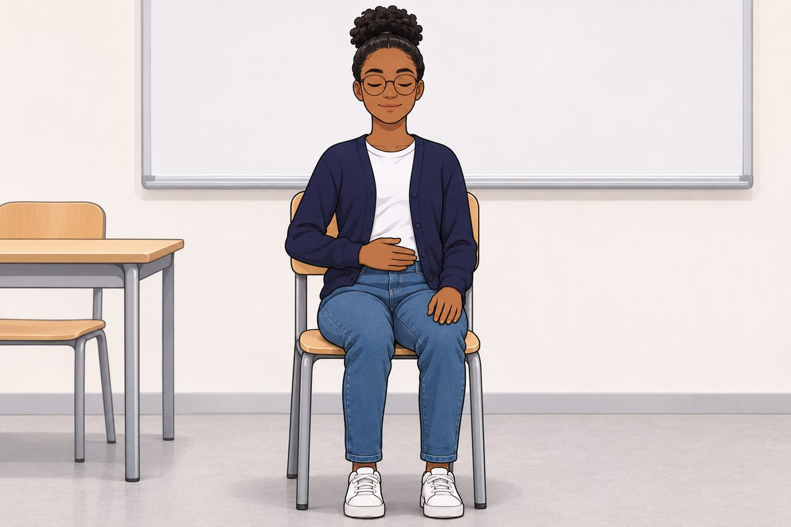
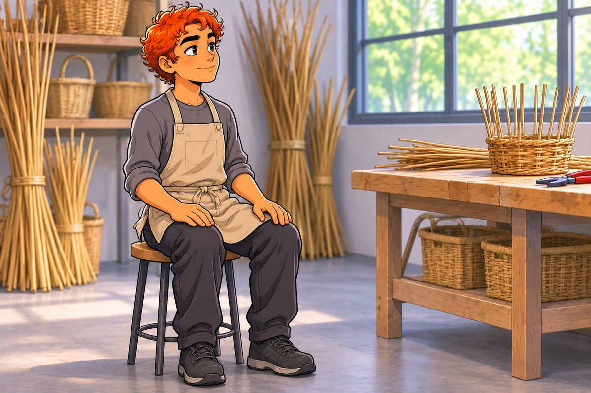

Prends un instant pour observer ce qui se passe en toi et autour de toi. Tu observes, tu ne changes rien.
Observer ma respiration

Respire comme d'habitude. Tu ne cherches pas à respirer plus lentement ou plus fort. Tu observes seulement.
Prêt ?
Durée : 1 minute
Mes 5 sens

Remarque ce que tu perçois, sans dire si c'est bien ou mal. Écrire est facultatif : tu peux aussi le dire dans ta tête.
5
Choses que tu VOIS
Regarde autour de toi. Remarque 5 choses que tu vois en ce moment.
4
Choses que tu TOUCHES
Remarque 4 contacts : tes pieds sur le sol, tes mains sur la table, tes vêtements…
3
Choses que tu ENTENDS
Écoute quelques secondes. Remarque 3 sons, proches ou lointains.
2
Choses que tu SENS (odeurs)
Remarque 2 odeurs. Si tu ne sens rien, c'est aussi une observation.
1
Chose que tu GOÛTES
Remarque le goût dans ta bouche en ce moment, même s'il est très léger.
Le tour du corps
Appuie sur chaque zone, dans l'ordre que tu veux. Lis la consigne. Prends 10 secondes pour remarquer ce que tu sens. Tu ne cherches pas à changer quelque chose.
Exercice terminé.
Qu'as-tu remarqué ? Une sensation, un son, une pensée ? Tout ce que tu as observé compte, même si ton esprit est parti ailleurs. Plus tu pratiques, plus il devient facile de revenir au moment présent.